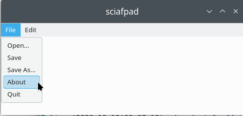
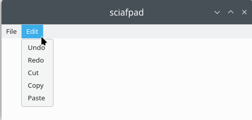

A minimal GTK4 text editor built on top of Scintilla, specifically the bugaevc/scintilla GTK4 port.


API documentation for the latest release: sciafpad v0.3.7.
GPL-3.0-or-later. See COPYING for details.